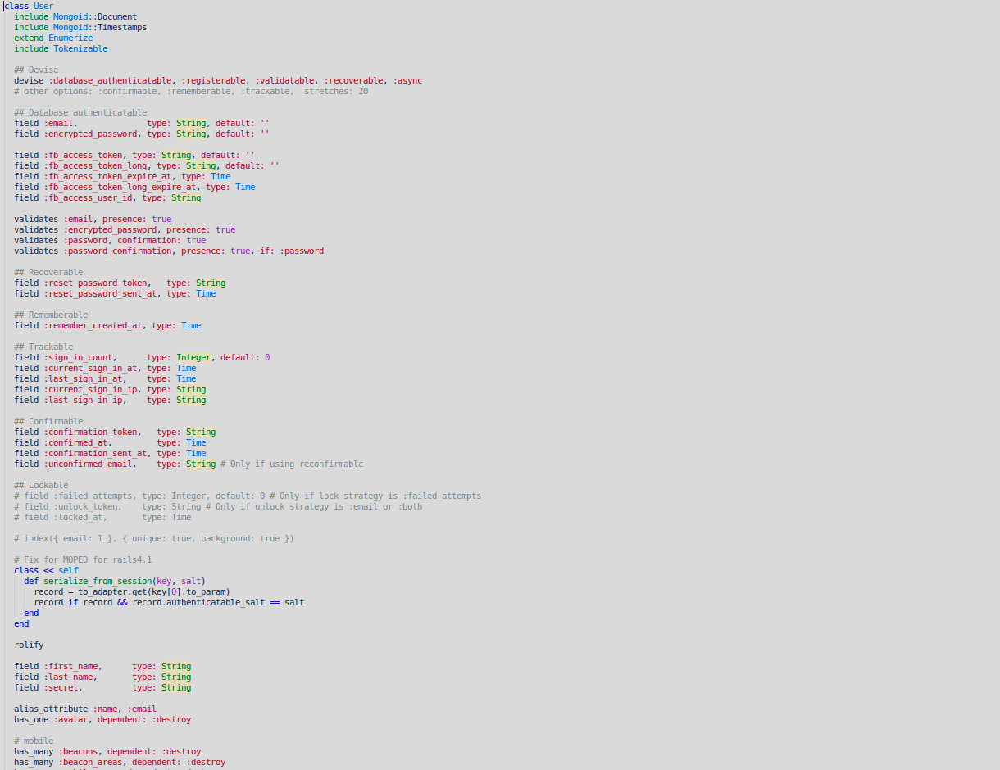
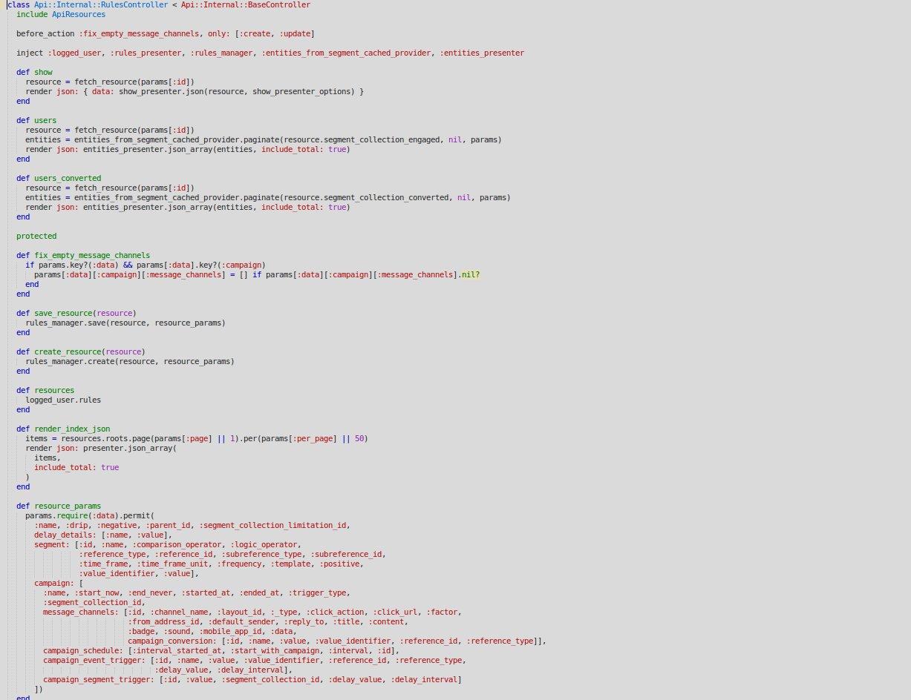
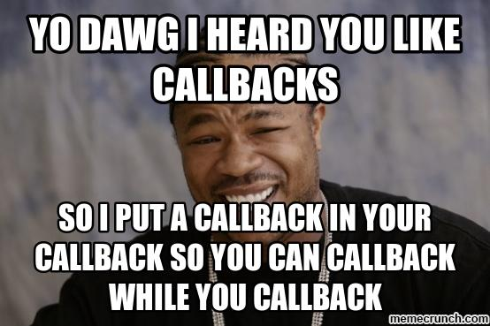
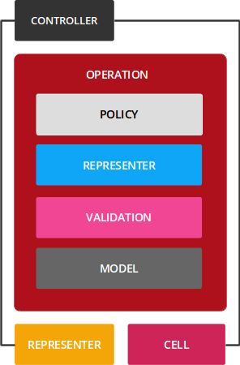
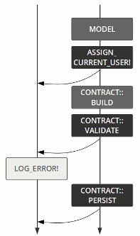

Trailblazer 2.0 - High Level Architecture 4 Ruby and Rails
Maciej Mensfeld
twitter: @maciejmensfeld
www: mensfeld.pl
e-mail: maciej@mensfeld.pl
$ whoami
- Software Engineer (10 years with Ruby)
- Trailblazer #1 user
- Karafka creator
- Founder of Coditsu - a comprehensive platform for insightful code analysis
$ whoami
www: coditsu.io
www: mensfeld.pl
twitter: @maciejmensfeld
e-mail: maciej@coditsu.io
Please notify me if...
- I speak 2 fast
- I should repeat anything
- I should explain something better
- You have any questions
I will be talking mostly in Ruby on Rails framework context but the same applies to any other

In the end, all of it is just Ruby
What's wrong with Rails the way it is?

The way Rails is being taught
- You need Rails to program in Ruby
- The Rails way is the best way
- Fat models
- Slim controllers
- Models to rule it all
- It's supposed to be object oriented programming - so let's make models validate themselfs
- States, everywhere states
- It can happen even if you don't know about it (callbacks)
You need Rails to program in Ruby
# Gemfile
source 'https://rubygems.org'
gem 'rails', '5.0.1'
%w(
rails
active_model/railtie
active_job/railtie
active_record/railtie
action_controller/railtie
action_mailer/railtie
action_view/railtie
sprockets/railtie
).each { |lib| require lib }
# Yeah now I can program...
@some_object.try :test
The Rails way is the best way
- It's blazing fast at the beginning
- Easy to add new features
- Just test prototypes and it's production ready
The Rails way is NOT the best way
- Business loves not only features
- But also predictability
- Monolith by design
- A lot of magic
- Model level associations and relations
- Non-trivial business logic in models, controlers, views and (horrible!) callbacks
Fat models
Fat models
- "Great" for everything
- Validations
- Presentation
- Relations
- Persistance
- Scopes
- Translations
- Callbacks
- Triggers
SRP as fu*k
Fat controllers
Fat controllers
- "Great" for everything
- Validations
- Presentation
- Relations
- Persistance
- Scopes
- Translations
- Callbacks
- Triggers
- Data filtering
- Authentication
- Permissions and policies
SRP as fu*k
Models don't care about context (unless explicitly given)
- Hard to build multi non-related model form
- Magic behind AR triggers weird things
- "Let's build in a way that will remove everything with a user" automatically
States, everywhere states
if @model.valid?
else
if @model.errors[:xyz].present?
else
end
end
if @model.status == 'available'
else
end
Callbacks
What we can do about it?
- Stop using Rails and use something else (LOL)
What we can do about it?
- Introduce some other layers (policies, services, presenters, validators, uploaders, jobs, etc)
- and... bind most of them in the controller context
What we can REALLY do about it?
- Data, Context, and Interaction (DCI)
- CQRS
- Event sourcing
- DDD practices
- Railway-oriented programming
Where do we start from? Trailblazer
What is Trailblazer?
Trailblazer gives you a high-level architecture for web applications. It extends the basic MVC pattern with new abstractions. Rock-solid conventions that go far beyond database table naming or route paths let you focus on your application code, minimize bugs and improve the maintainability.What do I know about Trailblazer?
- I've used every major (and sometimes minor) version of Trailblazer
- Even read Apotonicks book about it (heavily outdated novadays :D)
- Developed and maintained multiple apps with Trailblazer
- Had to patch things up from time to time to cover non-std cases
What do I know about Trailblazer?
class OrganizationsController < BaseController
def index
respond_with Organizations::Index.call(params)
end
def new
respond_with Organizations::New.call(params)
end
def create
respond_with Organizations::Create.call(params)
end
end
What Trailblazer is not
- Tool that will converts shitty programmers into Ruby magicians
- The new and only proper way to do Ruby apps
- Tool for junior developers (at least until they understand some concepts)
- Tool that has 100% accurate always up2date documentation
- Silver bullet to automatically refactor your apps
How does it work?
- Operation - A service object implementation with functional flow control.
- Contract - Form objects to validate incoming data
- Policy - To authorize code execution per user
- Representers - For serializing and parsing API documents.
How does it work?
How does it work?
Railway-oriented programming
The flow pipetree is a mix of the Either monad and Railway-oriented programming
Example - operation
class Create < ApplicationOperation
contract Contracts::Create
step Containers::Model::Build(Repository)
step Containers::Contract::Build()
step Containers::Contract::Validate(key: :repository)
step Containers::Contract::Persist()
failure Containers::Error::Raise()
end
Example - AM based contract
class Create < ApplicationContract
property :id
property :slug
property :setup_state
validates :id,
presence: true,
length: { is: 36 }
validates :slug,
presence: true
validates_uniqueness_of :id,
case_sensitive: false
validates_uniqueness_of :slug,
case_sensitive: false
end
What do I need to use it?
- A bit of patience
- A bit of DDD and CQRA understanding
- Understanding that code duplication can be good
- 100% code coverage
Downsides
- Composition over inheritance
- Often more code (but no coupling)
- Some WIP gems under the hood
- No invocation standardization
- Requires a good understanding of Ruby to do non-standard stuff
- Can be replaced (with a custom wrapper) with set of Dry-gems
Downsides
- I still prefer Dry-transactions DSL for endpoint handling
- Low code quality of Tralblazer itself
- No upgrade docs between major versions
- Trailblazer internal documentation understandable (if any) only by Apotonick